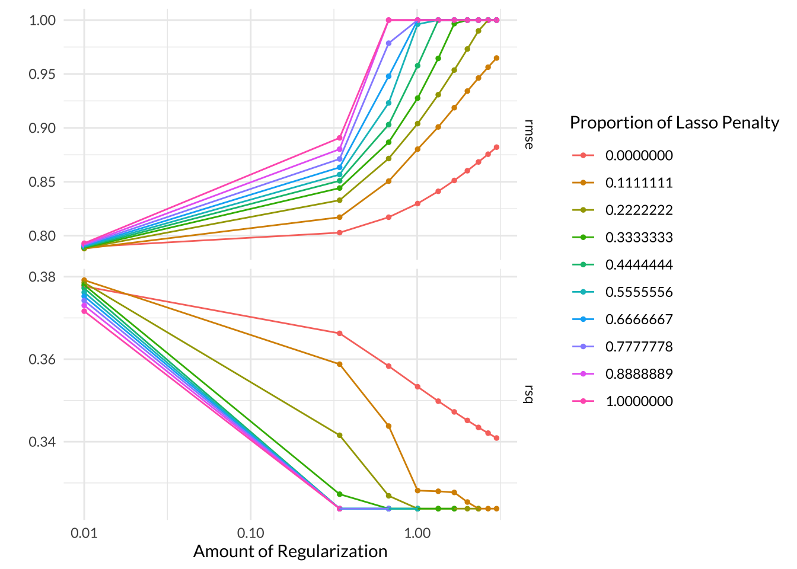
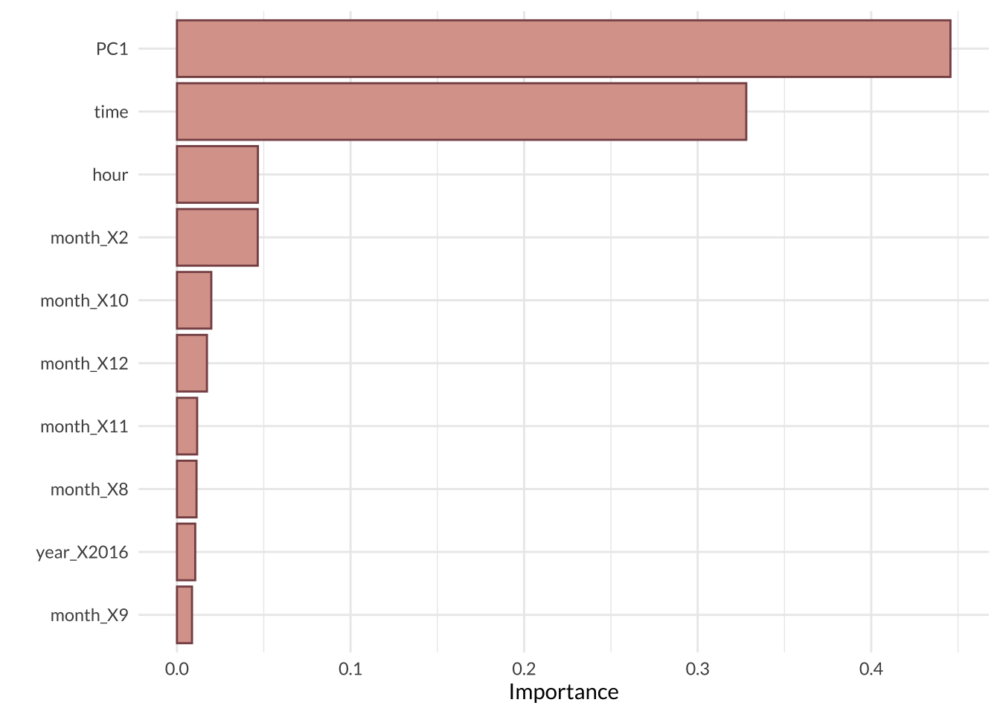
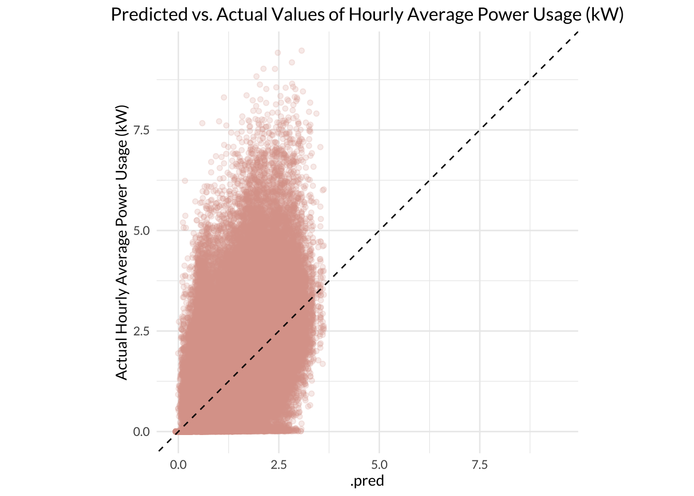

Predicting Residential Energy Usage based on Weather
R
Quarto
Git
Energy
Machine Learning
Machine learning models to predict energy use
Author
Kristin Art
Published
December 13, 2023
Predicting Residential Energy Usage based on Weather
This blog post includes an analysis in which I build and compare machine learning models that predict residential energy usage from weather patterns. The full analysis is available in this Github repository.
Introduction
It is important to understand the relationship between weather and energy consumption to inform how we plan and manage energy infrastructure to meet high energy demand events. 1 Understanding this relationship at a fine temporal and spatial scale could allow us to mitigate the extent of weather-related energy strain and impact on people. This is especially relevant in today’s day and age, as climate change alters regional temperatures and increases the frequency of extreme weather events. Improving the efficiency of energy consumption will work in tandem with grid modernization to meet climate and sustainability goals.
In this project, I investigate how energy use within residential homes varies based on weather. Past research has shown that there is significant variation in residential energy use within a day. 2 This intuitively makes sense, as most people turn their lights on at night and use more cooking appliances around mealtimes. It’s also well-known that more energy is consumed during the winter months in cold regions due to the generation of heat for warmth. Here, I use high-resolution data from residential apartments to build models that predict hourly energy consumption based on weather patterns.
Research Question
What weather patterns are good predictors of residential energy usage in Massachussets homes?
Data
I used data downloaded from the University of Massachusetts (UMASS) Trace Repository. 3 In particular, I used the Apartment dataset from the 2017 release of the UMASS Smart* Dataset, which is a project that aims to optimize home energy consumption. The Apartment dataset contains minute-level electricity data and local weather conditions from 114 anonymous apartments in Massachussetts collected between 2014-2016.
There are 114 individual data files with electricity data corresponding to individual apartments for each year, meaning there are a total of 342 files. There are also 3 data files containing weather data for each year.
Project Approach
Before I dive right into the project, here is a brief overview of my approach: I began by loading, tidying, and exploring the data. During this phase, I aggregated the per-minute consumption data into hourly averages and randomly sampled a subset of the apartments to reduce the computational power required to perform the analysis. I also removed variables with a large amount of missing observations and performed a casewise deletion for smaller cases of missingness. Then I visually explored the remaining variables to determine whether I needed to make any specific adjustments in my models - I did find that three predictors were highly correlated (> 90%), which informed my decision to reduce them into one principal component before running my models. Next, I split my clean data into training and testing datasets that were stratified on the outcome variable, split the training datasets into 5-folds for cross validation, and specified my model recipe. I then built, tuned, and compared the following model types: Linear Regression, K-Nearest Neighbor, Elastic Net Regression, Random Forest, and Gradient-Boosted Tree. I evaluated the performance of all model iterations based on root mean squared error (RMSE), finalized the workflow for the best model, and fit it to the testing dataset to determine how well it could predict energy consumption based on new data. Now let’s get into the details!
Load and Tidy Data
Code
library(tidyverse)library(tidymodels)library(janitor)library(ggplot2)library(kableExtra)library(here)library(lubridate)library(purrr)library(naniar)library(corrplot)library(showtext)tidymodels_prefer()# set seed to reproduce resultsset.seed(2244)# load fontsfont_add_google(name ="Lato", family ="lato")showtext_auto()
Since there were a large amount of individual files that needed to be loaded, aggregated, and cleaned, I began by defining two functions:
The first function, tidy_weather_data, loads and aggregates data from all files that contain weather information, converts the column headers to lower snake case, and adds columns for time parameters (datetime, date, year, month, and hour) using the tidyverse, janitor, and lubridate packages. I decided to separate out the year, month, and hour columns to be their own predictors because I believe energy usage may vary based on them. I also filtered the dataset to only contain dates from noon on October 14, 2014 onward, as that is the first datetime for which data exists in the apartments dataset.
Code
# define list of weather filesweather_files <-list.files(here::here("data/apartment-weather"), full.names =TRUE) # define function to process and clean weather datatidy_weather_data <-function(file_path) { df <-read_csv(file_path) %>% janitor::clean_names() %>%mutate(datetime = lubridate::as_datetime(time, origin ="1970-01-01", tz ="America/New_York"), # Convert unix timestamp to Eastern datetime date = lubridate::date(datetime),hour = lubridate::hour(datetime),month = lubridate::month(datetime),year = lubridate::year(datetime)) %>%filter(datetime >= lubridate::ymd_hms("2014-10-15 12:00:00")) # filter data to startdate of apartment datareturn(df)}# apply function over weather files weather_data <- purrr::map_dfr(weather_files, tidy_weather_data)# inspect result dfhead(weather_data)summary(weather_data)
The second function, tidy_apartment_data, loads and aggregates data from all files that contain electricity data, converts the column headers to lower snake case, and adds columns for time parameters (datetime, date, year, month, and hour) using the tidyverse, janitor, and lubridate packages. I also added a new column to the dataframe containing the unique apartment identification numbers, which were included in the file names. Lastly, I summarized the raw minute-level data into hourly average power use in kiloWatts to reduce the computational power required.
Code
# define list of apartment filesapt_files <-list.files(here::here("data/apartment"), pattern =".csv", full.names =TRUE, recursive =TRUE) # define function to process and clean apartment datatidy_apartment_data <-function(file_path) { df <-read_csv(file_path, col_names =c("datetime", "power_kw"), col_types =cols(datetime =col_datetime(), power_kw =col_double())) %>% janitor::clean_names() %>%mutate(apt_id =as.numeric(stringr::str_extract(basename(file_path), "Apt(\\d+)_\\d{4}") %>% stringr::str_extract("(?<=Apt)\\d+")),datetime = lubridate::ymd_hms(datetime),date = lubridate::date(datetime),hour = lubridate::hour(datetime),month = lubridate::month(datetime),year = lubridate::year(datetime)) %>%group_by(date, hour, apt_id) %>%summarize(hourly_average_power_kw =as.numeric(mean(as.numeric(power_kw), na.rm =TRUE))) %>%ungroup()return(df)}# apply function over all apartment files apt_data <- purrr::map_dfr(apt_files, tidy_apartment_data )# inspect result dfhead(apt_data)summary(apt_data)
After loading, aggregating, and cleaning all of the data (good job to my computer), I combined the weather dataset with the apartments dataset by joining them based on the common date and hour columns. I also defined the month, year, and apartment IDs as factors to make them easier to plot later on. Lastly, I randomly sampled 50 out of the 114 apartments in an effort to decrease the computational power and run time required for my machine learning models.
Code
# define random apartment ids to use for modelsapt_sample <-sample(1:114, 50, replace =FALSE)# combine weather and apartment datasmart_df <- apt_data %>%full_join(weather_data, by =c("date", "hour"), relationship ="many-to-many") %>%mutate_at(vars(hour,hourly_average_power_kw, temperature, humidity, visibility, apparent_temperature, pressure, wind_speed, cloud_cover, wind_bearing, precip_intensity, dew_point, precip_probability), as.numeric) %>%mutate_at(vars(month, year, apt_id), as.factor) %>%filter(apt_id %in% apt_sample)# save combined dfsave(smart_df, file ="data/inter_data/smart_df.csv")
Exploratory Data Analysis
Once all my data was in one dataframe, my first real step was to figure out how much of it was missing. Here I used the vis_miss() function from the naniar package to visualize any missing values.
Surprisingly, the dataset was near-complete! Only 1.2% of it was missing (this might be a new record for me). Nearly all of the missing values were from the cloud_cover column. I wonder why this variable was missing so many observations in an otherwise comprehensive dataset - maybe cloud cover relied on manual human measurement while the other variables were automatically measured by instruments.
Since the cloud_cover variable itself was missing 13% of observations and was not one of the most impactful predictor variables, I decided to drop the entire variable from the dataset. This way, I avoided losing 13% of the entire dataset like I would if I performed a complete case/ pairwise deletion.
The rest of the variables in the dataset were missing between 0-1% of their values. Since this is such a small proportion, I decided to performa complete case/ pairwise deletion across the entire dataset. If the proportion was higher, I would have imputed the missing values.
Code
# remove variables with missing data and non-useful datasmart_mod <- smart_df %>%select(-cloud_cover) %>%drop_na()
Once all the missing values were taken care of, I took a peek at the data through descriptive and summary statistics.
My final dataframe had 20 variables and 953,578 observations.
It looked like the data type for all the variables are appropriate. Most of the variables were numeric while the summary and icon variables were categorical. The apartment ID, month, and year were all factors because I defined them to be factors above. Lastly, the datetime and date columns are POSIXct and Date objects, respectively.
The summary statistics for all the variables are shown in the table below:
Code
smart_mod %>%summary() %>%kbl(caption ="Summary Statistics for all Variables in the Smart* Dataset") %>%kable_styling(full_width = F, font ="lato") %>%scroll_box(width ="100%", height ="200px")
Summary Statistics for all Variables in the Smart* Dataset
date
hour
apt_id
hourly_average_power_kw
temperature
icon
humidity
visibility
summary
apparent_temperature
pressure
wind_speed
time
wind_bearing
precip_intensity
dew_point
precip_probability
datetime
month
year
Min. :2014-10-15
Min. : 0.0
92 : 19379
Min. : 0.0000
Min. :-13.05
Length:953578
Min. :0.130
Min. : 0.290
Length:953578
Min. :-32.99
Min. : 986.1
Min. : 0.020
Min. :1.413e+09
Min. : 0.0
Min. :0.000000
Min. :-27.69
Min. :0.00000
Min. :2014-10-15 08:00:00.00
11 :108150
2014: 93127
1st Qu.:2015-05-01
1st Qu.: 6.0
36 : 19068
1st Qu.: 0.2112
1st Qu.: 34.49
Class :character
1st Qu.:0.530
1st Qu.: 9.190
Class :character
1st Qu.: 29.49
1st Qu.:1012.0
1st Qu.: 3.630
1st Qu.:1.430e+09
1st Qu.:158.0
1st Qu.:0.000000
1st Qu.: 24.25
1st Qu.:0.00000
1st Qu.:2015-05-01 02:00:00.00
10 : 94277
2015:439100
Median :2015-11-15
Median :12.0
38 : 19068
Median : 0.9015
Median : 48.62
Mode :character
Median :0.700
Median :10.000
Mode :character
Median : 46.43
Median :1017.2
Median : 5.860
Median :1.448e+09
Median :220.0
Median :0.000000
Median : 37.82
Median :0.00000
Median :2015-11-15 18:00:00.00
12 : 92501
2016:421351
Mean :2015-11-14
Mean :11.5
40 : 19068
Mean : 1.1568
Mean : 48.90
NA
Mean :0.676
Mean : 9.103
NA
Mean : 46.20
Mean :1017.2
Mean : 6.539
Mean :1.448e+09
Mean :207.4
Mean :0.003222
Mean : 37.48
Mean :0.06097
Mean :2015-11-15 09:39:56.80
1 : 76800
NA
3rd Qu.:2016-05-31
3rd Qu.:17.0
53 : 19068
3rd Qu.: 1.7686
3rd Qu.: 64.76
NA
3rd Qu.:0.850
3rd Qu.:10.000
NA
3rd Qu.: 64.76
3rd Qu.:1022.3
3rd Qu.: 8.650
3rd Qu.:1.465e+09
3rd Qu.:294.0
3rd Qu.:0.000000
3rd Qu.: 54.31
3rd Qu.:0.00000
3rd Qu.:2016-05-31 12:00:00.00
5 : 74400
NA
Max. :2016-12-28
Max. :23.0
109 : 19068
Max. :79.1174
Max. : 93.78
NA
Max. :0.980
Max. :10.000
NA
Max. : 98.45
Max. :1044.5
Max. :24.940
Max. :1.483e+09
Max. :359.0
Max. :0.426900
Max. : 75.29
Max. :0.90000
Max. :2016-12-28 22:00:00.00
7 : 74400
NA
NA
NA
(Other):838859
NA
NA
NA
NA
NA
NA
NA
NA
NA
NA
NA
NA
NA
NA
NA
(Other):433050
NA
Lastly, here’s a look at the first few rows of the data in case you want to get a feel for it:
Code
smart_mod %>%head() %>%kbl(caption ="First 6 Rows of the Smart* Dataset") %>%kable_styling(full_width = F, font ="lato") %>%scroll_box(width ="100%", height ="200px")
First 6 Rows of the Smart* Dataset
date
hour
apt_id
hourly_average_power_kw
temperature
icon
humidity
visibility
summary
apparent_temperature
pressure
wind_speed
time
wind_bearing
precip_intensity
dew_point
precip_probability
datetime
month
year
2014-10-15
12
1
0
74.20
partly-cloudy-day
0.73
9.56
Partly Cloudy
74.20
1018.98
10.07
1413388800
183
0.0023
65.00
0.06
2014-10-15 12:00:00
10
2014
2014-10-15
13
1
0
75.32
partly-cloudy-day
0.71
9.29
Partly Cloudy
75.32
1017.95
10.19
1413392400
178
0.0011
65.21
0.01
2014-10-15 13:00:00
10
2014
2014-10-15
14
1
0
75.91
cloudy
0.68
10.00
Overcast
75.91
1017.11
10.45
1413396000
179
0.0022
64.76
0.06
2014-10-15 14:00:00
10
2014
2014-10-15
15
1
0
75.86
clear-day
0.67
10.00
Clear
75.86
1016.71
11.05
1413399600
174
0.0000
64.21
0.00
2014-10-15 15:00:00
10
2014
2014-10-15
16
1
0
74.74
clear-day
0.70
9.79
Clear
74.74
1016.49
9.19
1413403200
178
0.0011
64.34
0.01
2014-10-15 16:00:00
10
2014
2014-10-15
17
1
0
74.14
partly-cloudy-day
0.72
10.00
Partly Cloudy
74.14
1016.22
9.86
1413406800
162
0.0000
64.48
0.00
2014-10-15 17:00:00
10
2014
Visual Exploratory Data Analysis
Next, I began my favorite type of exploratory analysis - visualization!
Correlation Plot
First off, I explored how correlated all of the numeric variables were by using the corrplot() function from the corrplot package to visualize a correlation matrix. It showed me that temperature, apparent_temperature, and dew point were highly positively correlated, which makes sense since they are physically related; since they were so highly correlated (> 90%), I decide to use a principal components analysis (PCA) in my model recipe below to collapse them into 1 feature instead of 3. Interestingly, these three variables were negatively correlated with hourly_average_power_kw, which is the outcome variable of interest. Another interesting finding is that visibility was negatively correlated to humidity, precipitation intensity, and precipitation probability - this makes sense since it is hard to see far while it’s raining. The other correlations were also logical since weather variables are typically all related.
Code
# correlation plot of all variablessmart_mod %>%select(where(is.numeric)) %>%cor() %>%corrplot(method ='number', order ='FPC', type ='lower', family ="lato", number.cex=0.6, bg ="grey80")
Power Usage Distribution
Next, I explored the distribution of hourly_average_power_kw, which is the outcome variable of interest. The outcome variable was highly positively skewed, as the vast majority of observations (order of \(10^5\) - \(10^6\)) for each bin were between 0 - 10 kiloWatts. There were only a handful of observations (order of \(10^1\)) for each bin between 15 - 232 kiloWatts.
Code
# histogram of energy usageggplot(data = smart_mod, aes(x = hourly_average_power_kw))+geom_histogram(fill ="#DAA49A", col ="#875053", bins =150)+labs(x ="Power Usage (kW)", y ="Count")+theme_minimal()+theme(text =element_text(family ="lato"))
Power Usage by Month
I visualized the relationship between power usage and month by making a box-and-whisket plot. As expected, power usage is lowest during the warm months (June - September) and highest during the cold months (November - February); this makes sense since most people crank up the heat in the winter months to stay warm. Interestingly, there were quite a few outliers for all of the months, which could mean some apartments use more energy in general.
Code
# boxplot of energy usage against monthggplot(data = smart_mod, aes(x =factor(month, labels = month.name), y = hourly_average_power_kw, group = month))+geom_boxplot(fill ="#DAA49A", col ="#875053")+scale_y_continuous(limits =c(0,12))+#geom_jitter(alpha = 0.4, col = "#DAA49A")+labs(x ="Month", y ="Power (kW)")+theme_minimal()+theme(text =element_text(family ="lato"))
Temperature Distribution
Next, I explored the distribution of temperature, which I expect would have a significant impact on energy use. Temprature had a normal distribution with a slight left tail, indicating a small negative skew.
Code
# histogram of temperatureggplot(data = smart_mod, aes(x = temperature))+# geom_histogram(aes(y = ..density..), bins = 50, fill = "#DAA49A", col = "#875053")+# geom_density(linewidth = 1.5)+geom_histogram(bins =50, fill ="#DAA49A", col ="#875053")+labs(x ="Temperature (deg F)", y ="Count")+theme_minimal()+theme(text =element_text(family ="lato"))
Model Set-Up
Next, I prepared my data for the machine learning models. Here, I randomly split the data into training and testing datasets, split the training dataset into 5 folds for k-fold cross validation, and specified a model recipe.
Split Training and Testing Data
First off, I split the full dataset into training and testing datasets. Like the names imply, the training dataset will be used to train the models while the testing dataset will be used to test the predictive power of the models at the very end. I split the data using the initial_split() function from the rsample package. The split is stratified on the outcome variable, hourly_average_power_kw, to ensure that both the training and the testing datasets have roughly the same distribution of hourly_average_power_kw. I split the full dataset so that 3/4 of it becomes the training dataset and the remaining 1/4 becomes the testing dataset. This was to ensure there is a good amount of data for training while still retaining enough for substantial testing.
Code
# split datasmart_split <- rsample::initial_split(smart_mod, prop =0.75,strata = hourly_average_power_kw)# assign splits to train and test objectssmart_train <- rsample::training(smart_split)smart_test <- rsample::testing(smart_split)
K-Fold Cross Validation
I also performed a k-fold cross validation on my entire training set with k = 5. This splits the entire training set into 5 folds that each consist of a mini-training, or analysis set, and a mini-testing, or assessment set. Each of my models will be trained on the analysis sets and tested on the assessment sets of each fold and the mean performance metric across all folds will be reported. I used the vfold function from rsample to split the training dataset into 5 folds and stratified on the outcome variable once again to ensure that each subset of the data has the same distribution of hourly_average_power_kw.
Code
# split data for k-fold CVsmart_folds <- rsample::vfold_cv(smart_train, v =5, strata = hourly_average_power_kw)
Build Recipe
Then I specified a recipe for the models to use. I used the recipes package to do things like define the model recipe, dummy code the categorical variables, center all predictors, scale all predictors, and reduce the dimensions of those highly correlated predictors I noticed during the EDA (temperature, apparent_temperature, and dew_point).
My recipe tells my models to predict hourly_average_power_kw as a function of temperature + humidity + visibility + summary + apparent_temperature + pressure + wind_speed + wind_bearing + precip_intensity + dew_point + precip_probability + year + month + hour + time. The results from the pre-processing steps I specified are shown below.
Code
# define recipesmart_recipe <- recipes::recipe(hourly_average_power_kw ~ temperature + humidity + visibility + summary + apparent_temperature + pressure + wind_speed + wind_bearing + precip_intensity + dew_point + precip_probability + year + month + hour + time, data = smart_train) %>% recipes::step_dummy(all_nominal_predictors()) %>%# dummy code categorical variables recipes::step_normalize(all_numeric_predictors(), -all_nominal_predictors()) %>%# center and scale numeric predictors only recipes::step_pca(c("temperature", "apparent_temperature", "dew_point"), num_comp =1) # convert highly correlated variables (>90) into 1 principal component#apply/view recipesmart_recipe %>% recipes::prep() %>% recipes::bake(new_data = smart_train) %>%head() %>%kable() %>%kable_styling(full_width = F, font ="lato") %>%scroll_box(width ="100%", height ="200px")
humidity
visibility
pressure
wind_speed
wind_bearing
precip_intensity
precip_probability
hour
time
hourly_average_power_kw
summary_Breezy.and.Foggy
summary_Breezy.and.Mostly.Cloudy
summary_Breezy.and.Overcast
summary_Breezy.and.Partly.Cloudy
summary_Clear
summary_Drizzle
summary_Drizzle.and.Breezy
summary_Dry
summary_Flurries
summary_Foggy
summary_Heavy.Rain
summary_Heavy.Snow
summary_Humid.and.Overcast
summary_Humid.and.Partly.Cloudy
summary_Light.Rain
summary_Light.Rain.and.Breezy
summary_Light.Snow
summary_Mostly.Cloudy
summary_Overcast
summary_Partly.Cloudy
summary_Rain
summary_Rain.and.Breezy
summary_Snow
year_X2015
year_X2016
month_X2
month_X3
month_X4
month_X5
month_X6
month_X7
month_X8
month_X9
month_X10
month_X11
month_X12
PC1
0.2820793
0.2571194
0.2295259
0.9074681
-0.2347835
-0.0560576
-0.0067788
0.0723027
-1.727829
0
-0.0101725
-0.007095
-0.007095
-0.0378107
-1.727704
-0.1460816
-0.0073847
-0.0073847
-0.0608575
-0.0465443
-0.029337
-0.0203483
-0.0074788
-0.0068951
-0.2423889
-0.0126264
-0.1116211
-0.0788855
-0.1086493
2.7684555
-0.1128537
-0.0123463
-0.0618335
-0.9242423
-0.8889373
-0.278143
-0.2909624
-0.2860174
-0.2909087
-0.2860689
-0.2906768
-0.2912252
-0.2853847
3.018419
-0.3573269
-0.3275356
-2.267436
0.1779755
0.1048700
0.0987204
0.9383314
-0.2826580
-0.1275158
-0.2912672
0.2167757
-1.727647
0
-0.0101725
-0.007095
-0.007095
-0.0378107
-1.727704
-0.1460816
-0.0073847
-0.0073847
-0.0608575
-0.0465443
-0.029337
-0.0203483
-0.0074788
-0.0068951
-0.2423889
-0.0126264
-0.1116211
-0.0788855
-0.1086493
2.7684555
-0.1128537
-0.0123463
-0.0618335
-0.9242423
-0.8889373
-0.278143
-0.2909624
-0.2860174
-0.2909087
-0.2860689
-0.2906768
-0.2912252
-0.2853847
3.018419
-0.3573269
-0.3275356
-2.335619
0.0218198
0.5052295
-0.0079559
1.0052019
-0.2730831
-0.0620124
-0.0067788
0.3612487
-1.727465
0
-0.0101725
-0.007095
-0.007095
-0.0378107
-1.727704
-0.1460816
-0.0073847
-0.0073847
-0.0608575
-0.0465443
-0.029337
-0.0203483
-0.0074788
-0.0068951
-0.2423889
-0.0126264
-0.1116211
-0.0788855
9.2039128
-0.3612117
-0.1128537
-0.0123463
-0.0618335
-0.9242423
-0.8889373
-0.278143
-0.2909624
-0.2860174
-0.2909087
-0.2860689
-0.2906768
-0.2912252
-0.2853847
3.018419
-0.3573269
-0.3275356
-2.355355
0.2300274
0.5052295
-0.1209819
0.8534573
-0.4358565
-0.1930191
-0.3481648
0.7946676
-1.726919
0
-0.0101725
-0.007095
-0.007095
-0.0378107
-1.727704
-0.1460816
-0.0073847
-0.0073847
-0.0608575
-0.0465443
-0.029337
-0.0203483
-0.0074788
-0.0068951
-0.2423889
-0.0126264
-0.1116211
-0.0788855
-0.1086493
2.7684555
-0.1128537
-0.0123463
-0.0618335
-0.9242423
-0.8889373
-0.278143
-0.2909624
-0.2860174
-0.2909087
-0.2860689
-0.2906768
-0.2912252
-0.2853847
3.018419
-0.3573269
-0.3275356
-2.249099
0.5943907
0.4770352
-0.0981227
0.1924680
-0.5124558
-0.1930191
-0.3481648
1.0836135
-1.726555
0
-0.0101725
-0.007095
-0.007095
-0.0378107
-1.727704
-0.1460816
-0.0073847
-0.0073847
-0.0608575
-0.0465443
-0.029337
-0.0203483
-0.0074788
-0.0068951
-0.2423889
-0.0126264
-0.1116211
-0.0788855
-0.1086493
2.7684555
-0.1128537
-0.0123463
-0.0618335
-0.9242423
-0.8889373
-0.278143
-0.2909624
-0.2860174
-0.2909087
-0.2860689
-0.2906768
-0.2912252
-0.2853847
3.018419
-0.3573269
-0.3275356
-2.089715
0.6984945
0.4544797
-0.1044725
0.0381514
-0.5794801
-0.1930191
-0.3481648
1.2280865
-1.726373
0
-0.0101725
-0.007095
-0.007095
-0.0378107
-1.727704
-0.1460816
-0.0073847
-0.0073847
-0.0608575
-0.0465443
-0.029337
-0.0203483
-0.0074788
-0.0068951
-0.2423889
-0.0126264
-0.1116211
-0.0788855
-0.1086493
2.7684555
-0.1128537
-0.0123463
-0.0618335
-0.9242423
-0.8889373
-0.278143
-0.2909624
-0.2860174
-0.2909087
-0.2860689
-0.2906768
-0.2912252
-0.2853847
3.018419
-0.3573269
-0.3275356
-2.058875
Model Building
Now it was finally time to build the predictive models! I used 5 different machine learning algorithms to do so: Linear Regression, K-Nearest Neighbor, Elastic Net Regression, Random Forest, and Gradient-Boosted Trees. All of the model types aside from the Linear Regression had specific hyperparameters that I could tune; hyperparameters are parameters external to the actual modeled data that control the learning process and performance of a model.
The general steps for building a model using tidymodels are:
Specify the model type, computational engine, model mode, and hyperparameters to tune (if applicable). Since my problem involves predicting a continuous outcome variable, I always set the mode to regression during this step.
Set up a workflow by combining the model specifications from step 1 with the model recipe.
Create a tuning grid with a range of values for each hyperparameter of the model. Then train and evaluate versions of the model that use different combinations of the hyperparameters using the training data set. Since I have a lot of data and this step can take a long time to run, I saved the model tuning results as .Rds files to avoid re-running the model tuning.
Compare the performance metric across all model versions and select the best one. Finalize the workflow with the best model and its specific hyperparameters.
Fit the final model to the testing dataset to evaluate its predictive performance on new data.
Steps 1-3 were included in the code chunks below for each model type I explored. Step 4 was included in the next section, Model Results, and step 5 was included in the Best Model Results section below.
Linear Regression
Code
# define model engine and modelm_mod <- parsnip::linear_reg() %>% parsnip::set_engine("lm")# set up workflowlm_wkflow <- workflows::workflow() %>% workflows::add_model(lm_mod) %>% workflows::add_recipe(smart_recipe)# fit single lm model across all folds of training setlm_res <- tune::fit_resamples(lm_wkflow, resamples = smart_folds)# save en resultssave(lm_res, file ="data/inter_data/lm_res.rda")
K-Nearest Neighbor
Code
# define model engine and modeknn_mod <- parsnip::nearest_neighbor(neighbors =tune()) %>% parsnip::set_engine("kknn") %>% parsnip::set_mode("regression")# set up workflowknn_wkflow <-workflow() %>% workflows::add_model(knn_mod) %>% workflows::add_recipe(smart_recipe)# set up grid to tune neighborsknn_grid <-grid_regular(neighbors(range =c(1, 10)), levels =5)
Code
# tune neighbors for knnknn_res <- tune::tune_grid(knn_wkflow, grid = knn_grid, resamples = smart_folds,control =control_grid(verbose =TRUE))# save en resultssave(knn_res, file ="data/inter_data/knn_res.rda")
Elastic Net Regression
Code
# set up modelen_mod <- parsnip::linear_reg(penalty =tune(), mixture =tune()) %>% parsnip::set_engine("glmnet") %>% parsnip::set_mode("regression")# set up workflowen_wkflow <- workflows::workflow() %>% workflows::add_model(en_mod) %>% workflows::add_recipe(smart_recipe)# create a regular grid for tuning penalty and mixture en_grid <- dials::grid_regular(penalty(range =c(0.01,3), trans =identity_trans()), mixture(range =c(0, 1)), levels =10)
Code
# tune hyperparameters for enen_res <- tune::tune_grid(en_wkflow, grid = en_grid, resamples = smart_folds, control =control_grid(verbose =TRUE))# save en resultssave(en_res, file ="data/inter_data/en_res.rda")
Random Forest
Code
# set up modelrf_mod <- parsnip::rand_forest(mtry =tune(), trees =tune(),min_n =tune()) %>%set_engine("ranger", importance ="impurity") %>%set_mode("regression")# set up workflowrf_wkflow <-workflow() %>%add_model(rf_mod) %>%add_recipe(smart_recipe)# create a regular grid for tuning mtry, trees, and min_nrf_grid <- dials::grid_regular(mtry(range =c(1, 15)), # n predictors that will be randomly sampled at each split when creating tree modelstrees(range =c(200, 400)), # n of trees contained min_n(range =c(10, 30)) # min n of data points in a node required for the node to be split further )
Code
# tune hyperparameters for rfrf_res <- tune::tune_grid(rf_wkflow, resamples = smart_folds, grid = rf_grid,control =control_grid(verbose =TRUE))# save rf resultssave(rf_res, file ="data/inter_data/rf_res.rda")
Gradient-Boosted Tree
Code
# set up modelbt_mod <-boost_tree(mtry =tune(),trees =tune(), learn_rate =tune()) %>%set_engine("xgboost") %>%set_mode("regression")# set up workflowbt_wkflow <-workflow() %>%add_model(bt_mod) %>%add_recipe(smart_recipe)# create a regular grid for tuning mtry, trees, and learning ratebt_grid <-grid_regular(mtry(range =c(1, 15)), trees(range =c(200, 400)),learn_rate(range =c(-10, -1)),levels =5)
Code
# tune hyperparameters for btbt_res <-tune_grid(bt_wkflow, resamples = smart_folds, grid = bt_grid, control =control_grid(verbose =TRUE))# save rf resultssave(bt_res, file ="data/inter_data/bt_res.rda")
Model Results
After all of the models were built, I compared their performance by evaluating the root mean squared error (RMSE) values of each. The RMSE (root mean squared error) measures the magnitude of error between predicted and actual values - lower RMSE values therefore reflect better model performance. Some of the autoplots also displayed the \(R^2\) values of the models, which explains the variance of the actual observed values where 1 is a perfect fit - higher \(R^2\) values therefore reflect better model performance.
I use the autoplot function to view each model’s RMSE and the show_best function from the tune package to determine the best-performing models from those that I tuned.
Linear Regression
There are no hyperparameters to tune in linear regression models, so I only developed one version of this model type. The mean RMSE across all 5 folds of the training data was 0.787 with a standard error of 0.00552.
Code
# load lm resultsload(here::here("data/inter_data/lm_res.rda"))# show best modellm_res %>% tune::show_best(metric ="rmse")
# A tibble: 1 × 6
.metric .estimator mean n std_err .config
<chr> <chr> <dbl> <int> <dbl> <chr>
1 rmse standard 0.787 5 0.00552 Preprocessor1_Model1
Code
# save best model resultslm_best <- lm_res %>% tune::show_best(metric ="rmse") %>%slice(1)
K-Nearest Neighbor
In K-Nearest Neighbor models, we can tune the K hyperparameter, which specified the number of neighbors that should be considered when evaluating an observation’s expected value. I tuned my K-Nearest Model for 5 values of K between 1 to 10.
Based on the autoplot, RMSE decreases and \(R^2\) increases as the value of K increases. The best performing model version had K = 10 with a mean RMSE across all 5 folds of 1.06 and a standard error of 0.00465.
# show best modelsknn_res %>% tune::show_best(metric ="rmse")
# A tibble: 5 × 7
neighbors .metric .estimator mean n std_err .config
<int> <chr> <chr> <dbl> <int> <dbl> <chr>
1 10 rmse standard 1.06 5 0.00465 Preprocessor1_Model5
2 7 rmse standard 1.10 5 0.00456 Preprocessor1_Model4
3 5 rmse standard 1.13 5 0.00439 Preprocessor1_Model3
4 3 rmse standard 1.16 5 0.00424 Preprocessor1_Model2
5 1 rmse standard 1.19 5 0.00395 Preprocessor1_Model1
Code
# save best model resultsknn_best <- knn_res %>% tune::show_best(metric ="rmse") %>%slice(1)
Elastic Net Regression
In Elastic Net Regression models, we can tune the penalty and mixture hyperparameters, which specify the …, respectively. I tuned my Elastic Net Regression models for 10 levels of penalty between 0.01 to 3 and 10 levels of mixture between 0 to 1. When mixture = 0, the model is actually performing a ridge regression and when mixture = 1, the model is performing a lasso regression.
Based on the autoplot, RMSE decreases and \(R^2\) increases as the values of mixture, or the proportion of lasso penalty, and penalty, or the amount of regularization, both decrease. The best performing model version had mixture = 0.111, which means it is much closer to being a ridge regression. The best model also had penalty = 0.01, a mean RMSE across all folds of 0.788, and a standard error of 0.00552.
Code
# load en resultsload(here::here("data/inter_data/en_res.rda"))# ploten_res %>%autoplot() +theme_minimal() +theme(text =element_text(family ="lato"))

Code
# show best modelsen_res %>% tune::show_best(metric ="rmse")
# A tibble: 5 × 8
penalty mixture .metric .estimator mean n std_err .config
<dbl> <dbl> <chr> <chr> <dbl> <int> <dbl> <chr>
1 0.01 0.111 rmse standard 0.788 5 0.00552 Preprocessor1_Model011
2 0.01 0.222 rmse standard 0.788 5 0.00552 Preprocessor1_Model021
3 0.01 0.333 rmse standard 0.789 5 0.00552 Preprocessor1_Model031
4 0.01 0.444 rmse standard 0.789 5 0.00552 Preprocessor1_Model041
5 0.01 0 rmse standard 0.789 5 0.00547 Preprocessor1_Model001
Code
# save best model resultsen_best <- en_res %>% tune::show_best(metric ="rmse") %>%slice(1)
Random Forest
In random forest models, we can tune the mtry, trees, and min_n hyperparameters. mtry represents the number of parameters that can be randomly chosen from at each split of the tree. When mtry is less than 1, that means the tree will have no parameters to choose from. When mtry = 15, the tree has access to all of the predictors at each split, which is the same as bagging. I cannot use a mtry greater than 15 because my model recipe only includes 15 predictors, so I used 3 values between 1 to 15. trees represents the total number of trees to include in the forest ensemble. I used 3 values of trees between 200 to 400. min_n represents the minimum number of observations that need to be in a node in order for it to be split further. I used min_n values between 10 to 30 during the tuning process.**
Based on the autoplot the number of trees does not make much of a difference in model performance, as all the colored lines are virtually on top of each other. The minimal node size did not appear to make much of a difference either, although it looks like min_n = 30 had a slightly lower RMSE than the lower values. The models that had access to 8 parameters at every split consistently performed the best. The best model had mtry = 8, trees = 300, and min_n = 30 with a mean RMSE across all folds of 0.760 and a standard error of 0.00563.
# show best rf modelsrf_res %>% tune::show_best(metric ="rmse")
# A tibble: 5 × 9
mtry trees min_n .metric .estimator mean n std_err .config
<int> <int> <int> <chr> <chr> <dbl> <int> <dbl> <chr>
1 8 300 30 rmse standard 0.760 5 0.00563 Preprocessor1_Model23
2 8 400 20 rmse standard 0.760 5 0.00562 Preprocessor1_Model17
3 8 400 30 rmse standard 0.760 5 0.00562 Preprocessor1_Model26
4 8 400 10 rmse standard 0.760 5 0.00562 Preprocessor1_Model08
5 8 200 30 rmse standard 0.760 5 0.00562 Preprocessor1_Model20
Code
# save best model resultsrf_best <- rf_res %>% tune::show_best(metric ="rmse") %>%slice(1)
Gradient-Boosted Tree
In Gradient-Boosted Decision Tree models, we can tune the mtry, trees, min_n, and learn_rate hyperparameters. The first three were described above in the Random Forest model results and the last one, learn_rate, represents how fast the boosted tree changes with each iteration. When learn_rate = 0, the tree doesn’t learn at all and at small values of learn_rate, the tree learns very slowly. I tuned my Gradient-Boosted Tree for 5 values of learn_rate between \(10^{-10}\) to \(10^{-1}\). Since this hyperparameter is the most impactful for gradient-boosted trees, I opted not to tune an alternative hyperparameter, min_n to reduce the computational power required. I did try out 5 values of mtry between 1 to 15 and 5 values of trees between 200 to 400 as well though.
Based on the autoplot, models with larger learning rates had the best performance. The number of trees did not make as significant a difference and the number of parameters that were available at every split did not make as much of a difference in most models, although models with mtry < 4 had slightly worse performance. The best performing model had mtry = 15, trees = 200, and learn_rate = 0.1 with a mean RMSE across all folds of 0.755 and a standard error of 0.00568.
# show best rf modelsbt_res %>% tune::show_best(metric ="rmse")
# A tibble: 5 × 9
mtry trees learn_rate .metric .estimator mean n std_err .config
<int> <int> <dbl> <chr> <chr> <dbl> <int> <dbl> <chr>
1 15 200 0.1 rmse standard 0.755 5 0.00568 Preprocessor1_M…
2 11 200 0.1 rmse standard 0.755 5 0.00561 Preprocessor1_M…
3 15 250 0.1 rmse standard 0.755 5 0.00570 Preprocessor1_M…
4 11 250 0.1 rmse standard 0.755 5 0.00562 Preprocessor1_M…
5 8 250 0.1 rmse standard 0.755 5 0.00563 Preprocessor1_M…
Code
# save best model resultsbt_best <- bt_res %>% tune::show_best(metric ="rmse") %>%slice(1)
Best Model Results
Once I combined the lowest RMSE from each model type, it was clear that a Gradient-Boosted Tree is the winner! It has a slightly lower RMSE than the runner-ups and predicted hourly_average_power_kw values that deviate from the actual observed values by approximately 0.755 kw on average. As mentioned above, the best performing model had mtry = 15, trees = 200, and learn_rate = 0.1 with a mean RMSE across all folds of 0.755 and a standard error of 0.00568.
Code
# combine best performance results from each model typeall_rmse <-tibble(Model =c("Linear Regression", "K-Nearest Neighbor", "Elastic Net Regression", "Random Forest", "Gradient-Boosted Trees"), RMSE =c(lm_best$mean, knn_best$mean, en_best$mean, rf_best$mean, bt_best$mean)) %>%mutate(RMSE =round(RMSE, 3)) %>%arrange(RMSE)all_rmse %>%kable() %>%kable_styling(full_width = F, font ="lato")
Model
RMSE
Gradient-Boosted Trees
0.755
Random Forest
0.760
Linear Regression
0.787
Elastic Net Regression
0.788
K-Nearest Neighbor
1.060
Next I finalized the workflow using the hyperparameters from the best Gradient-Boosted Tree model and fit it to the entire training dataset.
Code
# save best model best_mod <- bt_res %>% tune::select_best(metric ="rmse", mtries, trees, learn_rate)# finalize workflow with best modelfinal_wkflow <- tune::finalize_workflow(bt_wkflow, best_mod)# fit model to training datafinal_fit_mod <- parsnip::fit(final_wkflow, smart_train)
One cool thing about tree-based models is we can visualize which predictors were the most significant drivers of the outcome through a variable importance plot (VIP). Based on the VIP for the best model, the PC1 feature was the most important predictor variable by far; remember, the PC1 feature was extracted from the original temperature, apparent_temperature, and dew_point parameters, which were highly correlated (> 90%) to each other. The time parameter was the second most important variable, followed by hour and months. This result makes sense but surprised me! I was expecting more weather-related parameters to show up in the top 10.
Code
# create variable importance plot using training datafinal_fit_mod %>% workflowsets::extract_fit_parsnip() %>% vip::vip(aesthetics =list(fill ="#DAA49A", color ="#875053")) +theme_minimal() +theme(text =element_text(family ="lato"))

Next, it was finally time to introduce the best model to data its never seen before! I ran the model on the testing dataset to see how well it could predict values it was not trained on. The model’s RMSE on the testing dataset was 0.835, which is only slightly worse than the mean RMSE from the training process. This indicates that the training RMSE across 5-folds was a pretty good indicator of the model’s overall performance.
Code
# assess model performance on entire testing setfinal_mod_test <-augment(final_fit_mod, smart_test) %>%rmse(truth = hourly_average_power_kw, estimate = .pred) %>%print()
# A tibble: 1 × 3
.metric .estimator .estimate
<chr> <chr> <dbl>
1 rmse standard 0.835
When I plotted the predicted values of power usage against the actual observed values, it was clear that the model does not predict high values well at all; in fact, the model did not predict any power usage values higher than 3.75 kW. This is due to that strong positive skew in the outcome variable, which means even our best model was only trained with a handful of observations for the higher power usage values. Only the values that fall directly on the diagonal line in the plot below were accurately predicted by the model.
Code
# plot predicted vs. actual values from testing dataaugment(final_fit_mod, smart_test) %>%ggplot(aes(x = .pred, y = hourly_average_power_kw)) +geom_point(color ="#DAA49A", alpha =0.2) +geom_abline(lty =2) +coord_obs_pred() +labs(title ="Predicted vs. Actual Values of Hourly Average Power Usage (kW)",y ="Actual Hourly Average Power Usage (kW)",y ="Predicted Hourly Average Power Usage (kW)") +theme_minimal()+theme(text =element_text(family ="lato"),plot.title =element_text(hjust =0.5))

Code
# Update this with fake or untested data for blog post when have mroe time. # For fun, I used the model to predict residential power usage during the warmest and coolest observations in smart df. # filter to observations with highest and lowest temperatureextreme_temps <- smart_mod %>%filter(row_number() ==which.max(temperature) |row_number() ==which.min(temperature))final_predictions <-augment(final_fit_mod, extreme_temps) %>%select(.pred, hourly_average_power_kw, temperature, everything())final_predictions
Conclusion
The best model for predicting residential energy usage based on weather and time was a Gradient-Boosted Tree model. A Random Forest model did nearly as well, with only a small difference in RMSE separating the two. This is no surprise since decision tree-based models tend to work really well on many types of data. This is because tree-based models are highly flexible and non-parametric, meaning they do not assume any parametric constraints on the outcome variable. Interestingly, the Elastic Net Regression and Linear Regression models had a pretty similar performance to these top tree-based models, indicating that they also do a decent job of predicting residential energy usage; these model types could be more useful to a user who is willing to accept a little higher error in order to use models that are much less computationally expensive. The K-Nearest Neighbor model had the worst predictive power, which makes sense since KNN models tend to do poorly on data with too many predictors, or high dimensions.
Overall, the best model did an okay job at predicting residential energy usage. The actual values of the outcome variable, hourly_average_power_kw, ranged between 0 to 11.5 kW. On average, the best model’s predicted values were about 0.835 kW off from the actual observed values based on the testing RMSE; this means the model’s average error was about 7% of the entire range. The model could be improved by adding in more data values that have high energy usage values. By normalizing the distribution of the outcome variable in this way, I could improve the model’s learning and potentially improve its performance.
It was interesting to see that the principal component of temperature, apparent_temperature, and dew_point is the most important predictor of residential energy usage. Since apparent temperature itself is also a factor of relative humidity and wind speed, this principal component feature may represent all the key weather predictors due to their interrelatedness. Therefore, it makes sense that time variables (hour, time, month) would be the next most important predictors in the VIP rather than some of the general weather predictors that remained (descriptive weather summary, wind-bearing, etc.). This makes intuitive sense and it was fun to see it explained quantitatively. I learned a lot through this project and am looking forward to exploring more energy data with machine learning algorithms!
References
Footnotes
Thorve et al., 2023. https://www.nature.com/articles/s41597-022-01914-1#Tab1↩︎
Fikru and Gautier, 2015. https://www.sciencedirect.com/science/article/pii/S030626191500046X#ab005↩︎